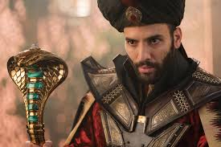

Mena Massoud
Mena Massoud was born on September 17, 1991. Mena Massoud is a Canadian actor.He is known for starring as Aladdin in Disney's musical fantasy film. An impoverished Agrabah thief and "street rat" who is smitten with the Sultan's daughter. With the Genie's help, he masquerades as Prince Ali Ababwa. Massoud said that Aladdin "sees a future for himself that's greater than what's been set out for him at the present moment. He doesn't know exactly what it is or how he's going to get there, but he knows it is out there," and felt the character very selfless and usually does things for other people, but as he falls in love he loses himself a little bit and starts to become someone that he's not. But he's a good person with good intentions and has good people surrounding him who lead him back to where he's supposed to be.
Naomi Scott
Naomi Grace Scott was born on May 6, 1993.Naomi Grace Scott is a British actress and singer. She is known for starring as Princess Jasmine in Disney's musical fantasy film, Aladdin. The Sultan's daughter and the feisty princess of Agrabah who wants to have a say in how she lives her life. Scott said that the character "will be strong and have fun, but also get it wrong and be emotional. She's a multidimensional woman, and she does not have to just be one thing. So in this movie, you see her go on such a roller coaster, as opposed to her one goal being to escape the loneliness of royalty and find a companion." She further stated that Jasmine will try to find "the courage to speak out for her people," and said that "Jasmine wants to know what goes on in her kingdom and reconcile the distance that has been created, and Aladdin gives her the courage to do just that."
Will Smith
Williard Carroll Smith Jr was born on September 25, 1968. Willard Carroll Smith Jr. is an American actor and rapper. In April 2007, Newsweek called him "the most powerful actor in Hollywood". Smith has been nominated for five Golden Globe Awards and two Academy Awards, and has won four Grammy Awards. He is known for starring as Genie in Disney's musical fantasy film, Aladdin. The Sultan's daughter and the feisty princess of Agrabah who wants to have a say in how she lives her life. Scott said that the character "will be strong and have fun, but also get it wrong and be emotional. She's a multidimensional woman, and she does not have to just be one thing. So in this movie, you see her go on such a roller coaster, as opposed to her one goal being to escape the loneliness of royalty and find a companion." She further stated that Jasmine will try to find "the courage to speak out for her people,"[11] and said that "Jasmine wants to know what goes on in her kingdom and reconcile the distance that has been created, and Aladdin gives her the courage to do just that."
Marwan Kenzari
Marwan Kenzari was born on January 16, 1983. Marwan Kenzari is a Dutch actor and comedian. He has performed in Dutch and English language movies. He won a Golden Calf for Best Actor in 2013 for his performance in the film Wolf.He has acted in films and TV series in his native Netherlands since 2008. In 2009 Kenzari graduated at the Maastricht Academy of Dramatic Arts. In 2013, he won a Golden Calf for Best Actor at the Netherlands Film Festival for his role in the feature film Wolf (2013).The film was translated into Russian by Russian film translator Andrey Efremov and screened at the 2013 VOLOGDA Film Festival. In 2014, he won a Shooting Stars Award at the Berlin International Film Festival. He is known for starring as Jafar in Disney's musical fantasy film, Aladdin.A nefarious and deceptive sorcerer, the Grand vizier of Agrabah, and the Sultan's chief advisor. Frustrated with the Sultan's ways of ruling, he devises a plot to overthrow him as the ruler of Agrabah by acquiring the Genie's lamp. Jafar's backstory is explored in the film, which producer Jonathan Eirich felt would make the audience "understand why he's so bad," as "that's what makes him such a good villain."
Navid Negahban
Navid Negahban was born on June 2, 1968. Navid Negahban is an Iranian-American actor. He has appeared on 24, Homeland, Mistresses and as Amahl Farouk / Shadow King in the second and third seasons of FX's Legion. He is known for starring as The Sultan in Disney's musical fantasy film, Aladdin.The wise and noble ruler of Agrabah who is eager to find a capable husband for his daughter Jasmine. He has appeared in The Shield, The West Wing, Lost, and CSI: Miami.He has collaborated twice with Iranian-American actress Necar Zadegan, once in 24, where her on-screen husband ordered his interrogation and the torturing of his family, and also in CSI: Miami, where, as his wife, she killed him.Negahban also had two collaborations with another Iranian-American actress Mozhan Marnò in the TV series The Unit and the movie The Stoning of Soraya M, where he plays the husband of Soraya (Marnò).
Nasim Pedrad
Nasim Pedrad was born on November 18, 1981. Nasim Pedrad is an American actress and comedian best known for her five seasons as a cast member on Saturday Night Live from 2009 to 2014. She has since gone on to co-star in sitcoms such as Mulaney, Scream Queens, People of Earth, and New Girl, and the live-action remake of Aladdin. She is known for starring as Dalia in Disney's musical fantasy film, Aladdin.Jasmine's loyal handmaiden and confidante. Pedrad said that Dalia "has been by Jasmine's side for years and really looks out for her." Pedrad was a performer with the Sunday Company at The Groundlings. She frequently performed her one-woman show Me, Myself & Iran at the Los Angeles divisions of ImprovOlympic and the Upright Citizens Brigade Theater. The show was selected for the 2007 HBO Comedy Festival in Las Vegas. She received an LA Weekly Best Comedic Performance of the Year Award as the lead in the comedic spoof After School Special.Pedrad made her first television appearance on an episode of Gilmore Girls. In 2007, she made a guest appearance on The Winner. She had a recurring role on ER as Nurse Suri.In 2009, she had a guest appearance on It's Always Sunny in Philadelphia.Nurman Acar
Nurman Acar was born on October 7, 1974. He is known for starring as Jafar's right-hand man in Disney's musical fantasy film, Aladdin. The head of the palace guards who is loyal to the Sultan of Agrabah, as his father worked for the Sultan as a palace servant. Acar was born in Kozoglu, Kelkit district, Turkey and lived until his eighth year in Erzincan. In 1982 he emigrated to Germany where he initially studied civil engineering. After completion of his studies he took on acting and started to perform in Turkish and German films. As a producer he specialized in German-Turkish movies and started Acar Entertainment in 2007. In 2014 Acar played the role of Haissam Haqqani in season 4 of Homeland, an American-made TV production.Acar, who lives in Berlin, speaks several languages fluently including German, Turkish, Spanish and English and has knowledge of Kurdish, Azerbaijani and Arabic
Frank Welker
Frank Welker reprises his three roles as:Abu, Aladdin's kleptomaniac but a loyal pet.

Rajah, Jasmine's protective pet who communicates through growling, roaring, and grunting.

Cave of Wonders,A sand guardian that resembles the giant head of a lion.

Alan Tudyk